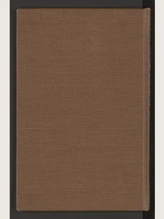

تسع رسائل في الحكمة والطبيعيات وفي آخرها قصة سلامان وابسال

قراءة محددة النطاق لصفحة واحدة من النسخة الممسوحة، وليست تلخيصا كاملا للكتاب. نصف ما ظهر لنا في هذه الصفحة فقط، ولا ننقل نصها.
آخر أيام ابن سينا وقائمة مؤلفاته
الصفحة المقروءة ترجمة لابن سينا. تذكر علاجه علاء الدولة من القولنج، ثم أن الطبيب أضاف بذر الكرفس والأفيون، وأن خدمه خانوه. وبعد أن استعاد صحته ضعف في الطريق إلى همذان، فتاب واغتسل وتصدق وأعتق عبيده وكان يقرأ القرآن كل ثلاثة أيام. ثم تعدد مؤلفاته: الشفاء والنجاة والإشارات والقانون ونحو مائة كتاب، وفيها رسائل حي بن يقظان وسلامان وأبسال والطير. نصف ما في الصفحة فقط.
زاوية وحدود القراءة
قراءة صفحة ترجمة واحدة من الطبعة الممسوحة، لا الكتاب كاملًا.
الطبعة والحقوق
تصنف جامعة نيويورك مجموعتها الرقمية للكتب العربية بأنها محتوى عربي في الملك العام، ولا يذكر سجل هذا الكتاب بيان حقوق خاصا به. سنة الطبعة بحسب السجل: ١٩٠٨م. مصدر النسخة الممسوحة: مكتبات جامعة نيويورك. حياة المؤلف بحسب السجل: ٩٨٠-١٠٣٧م. هذا كل ما نستند إليه في الحقوق، ولا ندعي أكثر منه.
تنزيل PDF المجاني ↓ صفحة الكتاب في المجموعة ↗